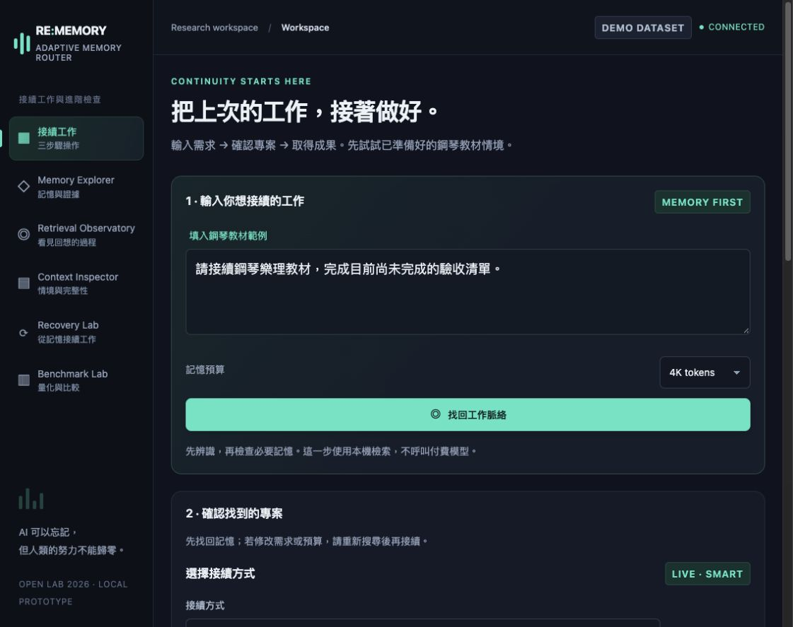
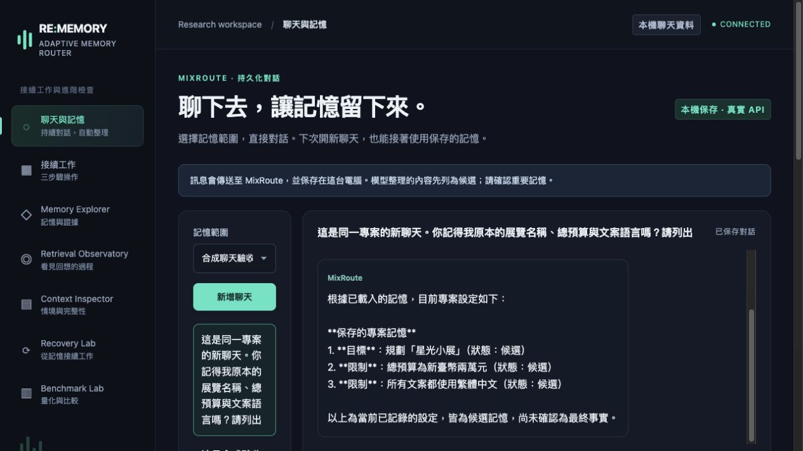

OPEN LAB 2026 · ADAPTIVE MEMORY ROUTER
AI 可以忘記，
人類的努力
不能歸零。
換一個模型，開一個空白工作階段。
先找回專案目標與限制，再產出接續清單。
本機原型 · 合成資料 · 真實 MixRoute API

記憶找回，
任務接續。
目前使用預載合成專案。輸入需求、找回並確認目標與限制，再由 MixRoute 產出 Markdown 驗收／接續清單。11/28 新增本機「聊天與記憶」：直接透過 MixRoute 持續對話、保存歷史並整理候選記憶。可確認、修正、忘記，同一範圍的新聊天可使用保存設定。沒有私人檔案匯入或程式修改工具。
此頁提供保存實測、操作影片與下載；互動原型需在本機啟動。最新單頁 SMART／auto 實測為 DeepSeek-V3.2，1 次呼叫、925 Token；已完成成果再次讀取不追加呼叫。
模型切換，
工作不用重新開始。
RE:MEMORY 用專案索引、稱呼、活動與來源關係，逐輪縮小候選。接手前檢查目前目標、限制、決策、任務與成品依賴；來源缺失、衝突或成品失效時，停止執行。
模型取得的是必要記憶與保存成品，不需要舊聊天全文。已完成任務保留完成紀錄；記憶修正留下歷史版本，受影響成品需要重新驗證。
11/28 · MIXROUTE 持續聊天
聊下去，讓記憶留下來。
選個人或專案範圍 → 新增聊天 → 直接送出。訊息傳送至 MixRoute，歷史與候選記憶保存在本機；候選可確認、修正或忘記，不會直接升級為已驗證事實。
真實合成驗收：三筆 auto 都回傳 DeepSeek-V3.2，共 1,980 Token。第二輪接續兩則歷史；新聊天的歷史數為 0，讀回「星光小展、兩萬元、繁體中文」三項候選記憶。

新增功能 142 項測試通過。MixRoute 也實際提供設計評估與驗證函式草稿，經人工檢視整合。公開頁仍為靜態展示；聊天原型須下載並在本機啟動。
MIXROUTE · PERSISTENT MEMORY
兩個模型，接續同一份努力。
第一階段要求 auto，實際回傳 Sonnet；第二階段使用授權池中的 DeepSeek。兩個不同 Session 的原始歷史數都是 0。
請求、Session 與成品 SHA
生成文字為 CLAIM。驗證涵蓋結構、目前目標與限制，不代表內容全部正確，也不代表清單已執行。
實際保存的 MARKDOWN 成品
下載這份成品核對第二個模型收到的前一份成品
這些控制項只讀取本站的保存紀錄，沒有額外 API 呼叫。完整上下文與回傳欄位可由下方證據檔核對。
固定案例 · 相同 4K 上下文預算
保留實測，也保留界線。
測試前固定 20 個新句型：16 個可接續任務、4 個應停止案例。使用十個合成專案的來源資料，測試後沒有調整路由或答案。這不是封存盲測，也不代表真實使用者的普遍表現。
| 策略 | 成品通過 | 應停止案例 | 實際模型 | 已知 Tokens |
|---|
E：必要記憶＋固定模型；F：必要記憶＋SMART／auto。Sonnet 另測預選的 6 個案例，樣本範圍較小。
兩種策略均通過目前的成品檢查，但沒有證據顯示 auto 提高了模型品質。另有 A–F 六策略與 10／100／1000 專案的離線測試，完整結果及失敗紀錄放在原始碼包。
最後 40 次模型與 Token 用量已對上控制台紀錄；參考費用小計 US$0.038070，正式帳單仍為 UNKNOWN。
本輪無未知用量；累計有兩筆早期失敗呼叫的用量未知。開發與測試由 Codex 協助，作品內的模型生成由 MixRoute 提供。
本人有聲 Demo 展示原三步驟接續；11/28 新增聊天功能見上方截圖與真實驗收收據。
GENUINE SCREEN RECORDING
一分四十秒，看工作如何接續。
參賽者重新錄製的三步驟操作 Demo，約1分40秒，影片已包含本人錄音；沒有使用 AI 配音。下方另保留先前的獨立旁白備份。
獨立旁白備份
下載本人錄音逐句稿REVIEWABLE DELIVERY
看得到來源，跑得動原型。
本機啟動與驗證方式
- 解壓縮原始碼，依 README 安裝 Python 3.12 與依賴。
- macOS 執行
./start_mac.sh；Windows 執行start_windows.bat。 - 開啟
http://127.0.0.1:8791。本機 SIMULATION 不需要金鑰，也不消耗模型 Tokens。 - 需要真實生成時，將
.env.example複製為本機.env，填入自己的 MixRoute Key、授權模型池與核對過的單價。金鑰只留本機。 - 首頁選擇記憶範圍並新增聊天，使用 auto 直接對話；右側確認、修正或忘記候選記憶。左側「接續工作」保留三步驟：輸入需求 → 找回並確認專案 → 取得成果。選擇 MixRoute 自動選模（SMART），按下確認專案並接續；系統自動建立空白工作階段。已完成的工作會直接讀取成果，不重複呼叫 API。
交付頁提供靜態實測回放；可執行原型在原始碼包內。原型尚未提供多租戶認證、私人資料匯入、正式音訊轉換或完整語意查核。